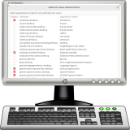

<div class="header"><h1 class="title">Menu Administration</h1></div>

<div class="main">

<div class="content"><ul>
	<li><em>Edubuntu Menu Administration</em> allows administrators to hide applications from non-administrators.</li>
	<li>Applications are hidden and shown with an easy checkbox.</li>
	<li>Settings apply to any non-administrator user.</li>
</ul></div>

</div>


